1 · Departure → F wayfinding


The line bar, OS circle, platform strips and LED chip all carry over. There's no hero number, because the board has no single stat.
Every station as built (headless Chrome, 390×844 phone emulation, demo data with sample genres, reduced motion), beside the approved mockup for its world. The mockups show one shared sample slide (your #1 artist), so compare the visual language, not the content. Torii and kanji share world C, and fuji and omikuji share world I.
The line bar, OS circle, platform strips and LED chip all carry over. There's no hero number, because the board has no single stat.
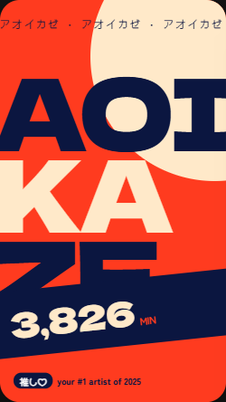
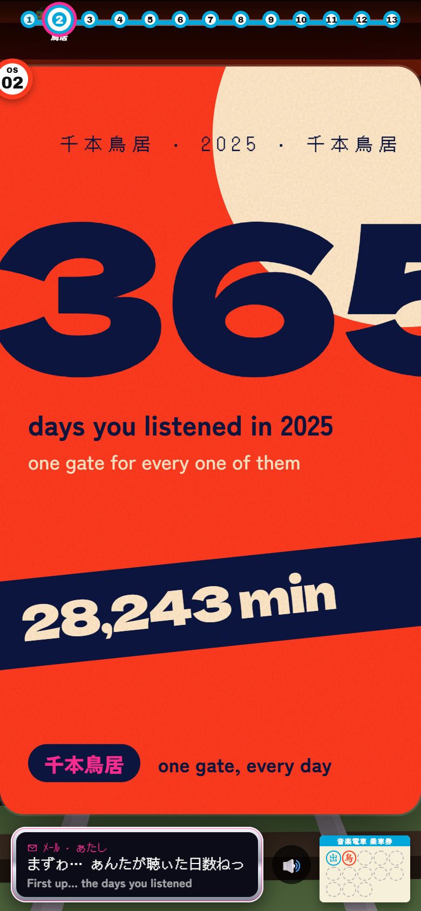
Matches: the vermilion field, cream sun, cropped mega number, tilted navy band and marquee. The days count grows out of the station sign as it arrives. The 2D gates went; the 3D district keeps them.
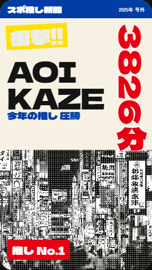
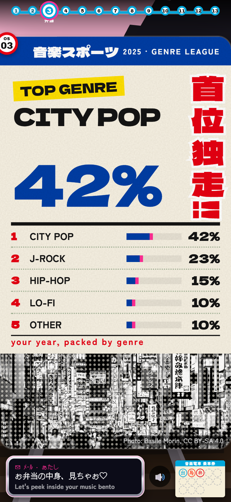
Matches: the blue masthead, red vertical headline, yellow kicker and halftone Kabukicho crop, credited. The genres sit in a league table. It only plays once genres exist; until then you can preview it with ?genres=sample.
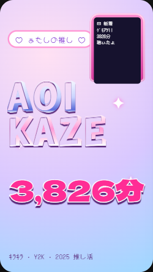
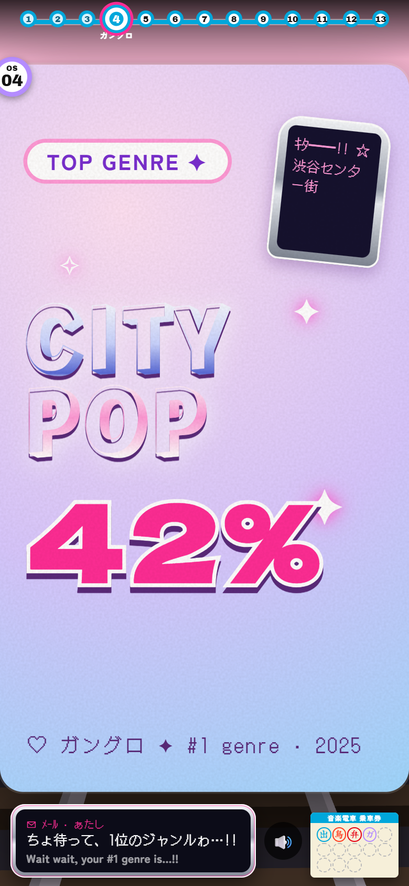
Matches: the holographic pastels, chrome Rampart type, flip-phone sticker and pink stroked number. The share only appears when genre data has it.


Unchanged from Art Plan 1. Its splash panel is now the source of the panel-to-cover morph into idol.
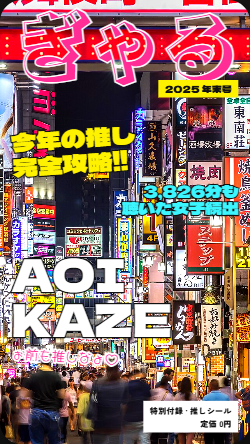
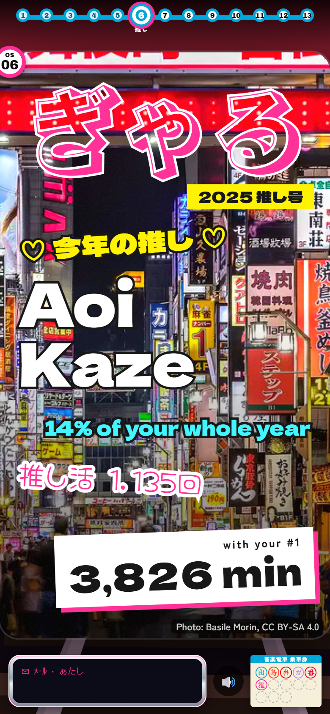
Matches: the full-bleed night cover, the ぎゃる masthead, cover lines in fighting colours and the price box (the hero). The photo is the city, credited, and is never shown as the artist.
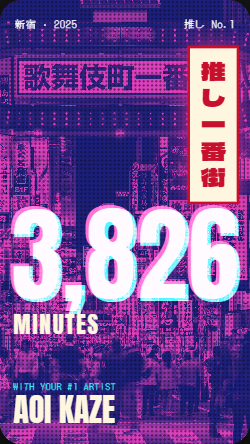
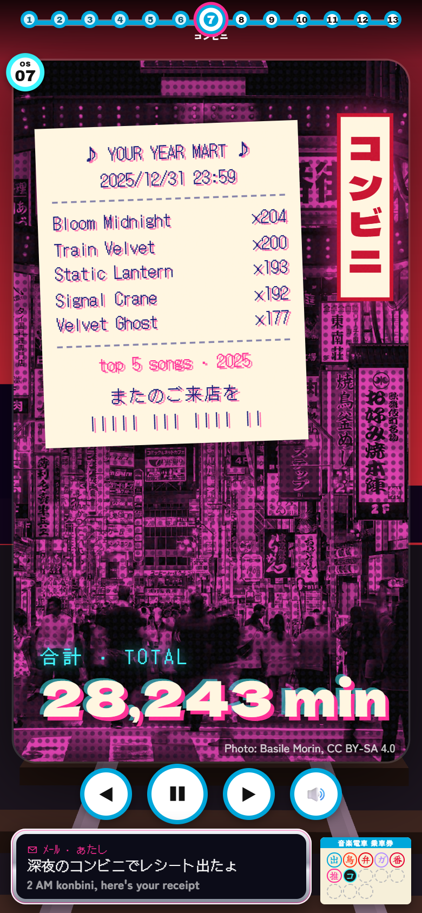
Matches: the pink × navy duotone, halftone, off-register receipt ink and vertical shop sign. The total is the hero. It arrives by the neon-takeover morph.


Unchanged from Art Plan 1. It arrives by the pixel wipe.
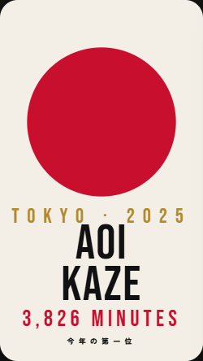
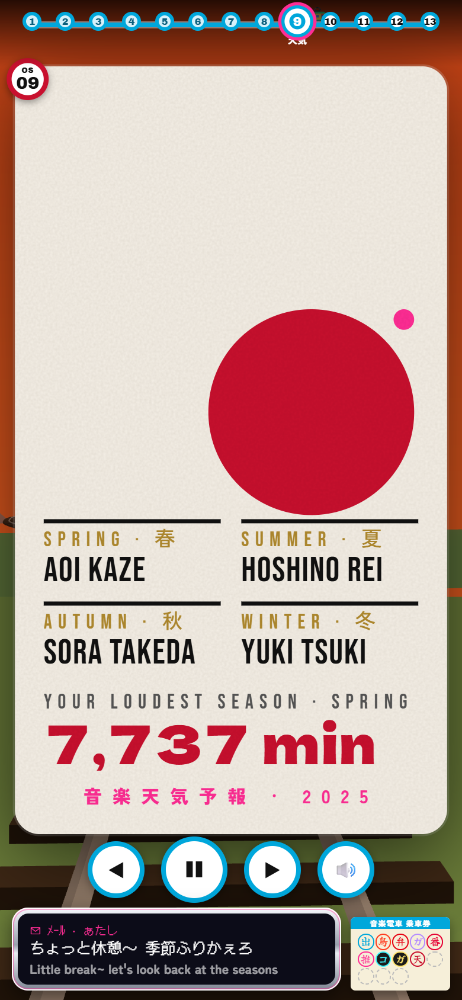
One red sun snaps in, out of the gacha's pixels, and steps through four positions, one per season. Shown here at its winter stop. The loudest season is the hero.


New: the arrival starts as weather's red sun draining into an ink ensō around 富.
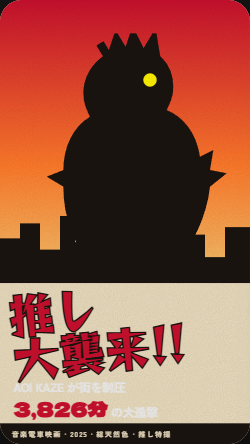
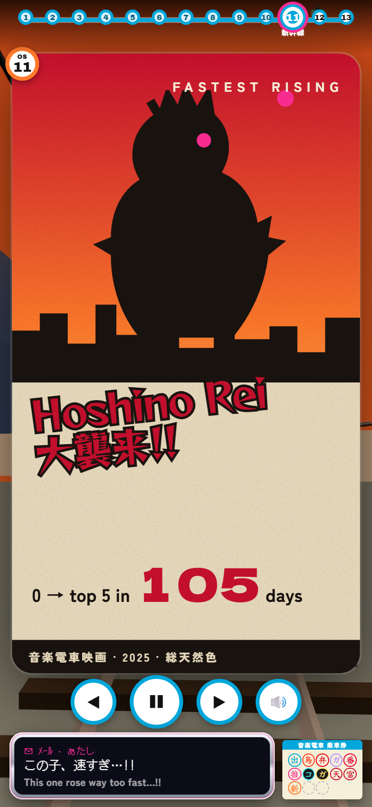
Matches: the painted sunset, silhouette over the city, slanted Reggae One title and credits strip. It arrives by the ink-to-beast morph from Fuji's summit.
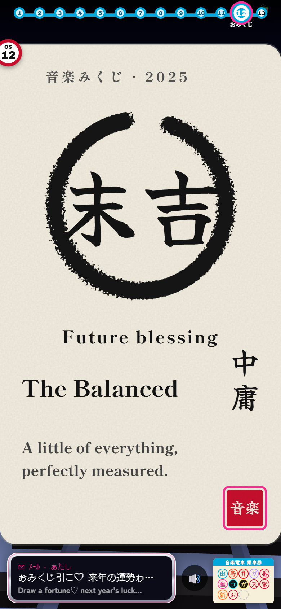
The closest to its mockup: the fortune brushed inside an ensō, Shippori text, the vertical personality and a red seal.
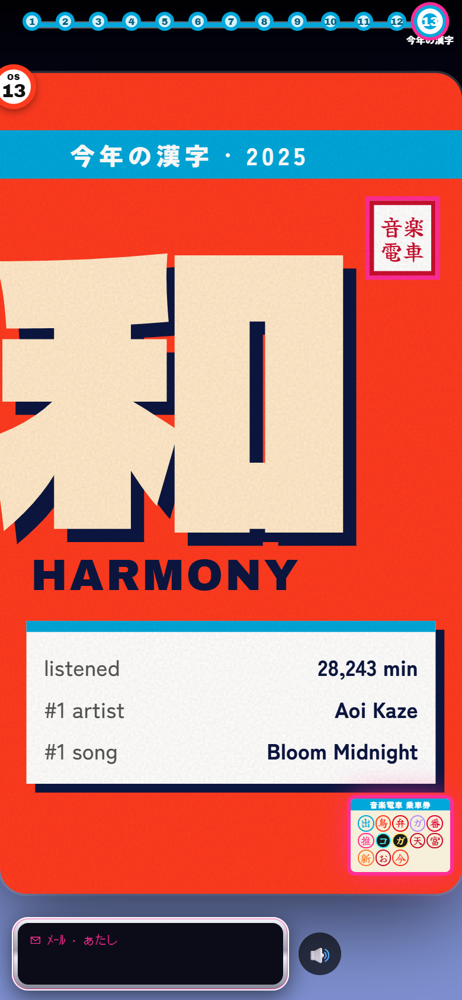
The mega kanji brushes on, under the blue wayfinding band, with the summary board. The stamped ticket lands beside it.